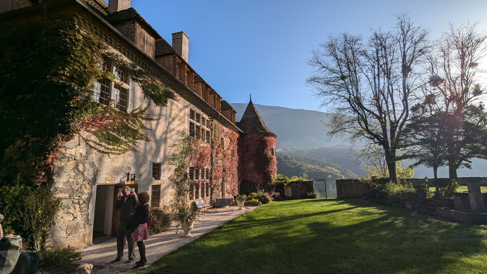
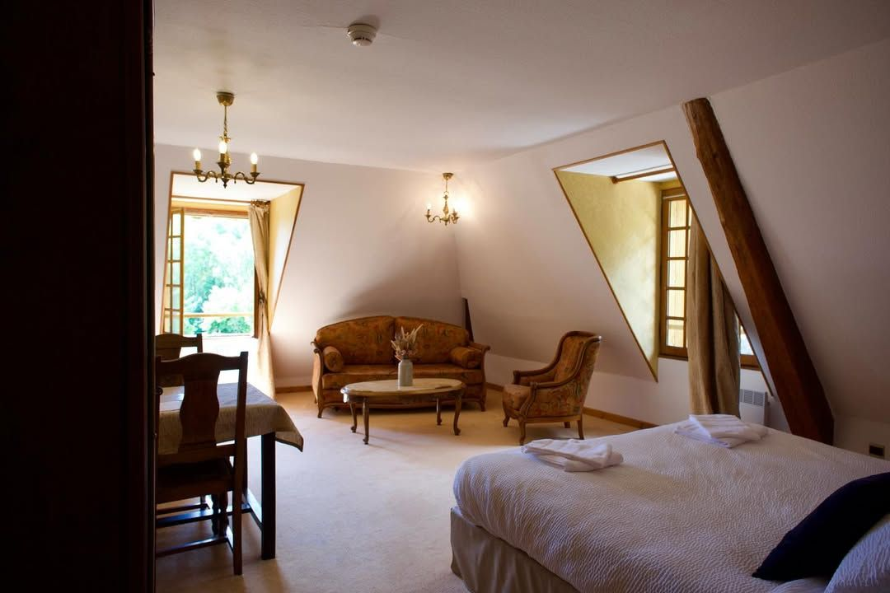
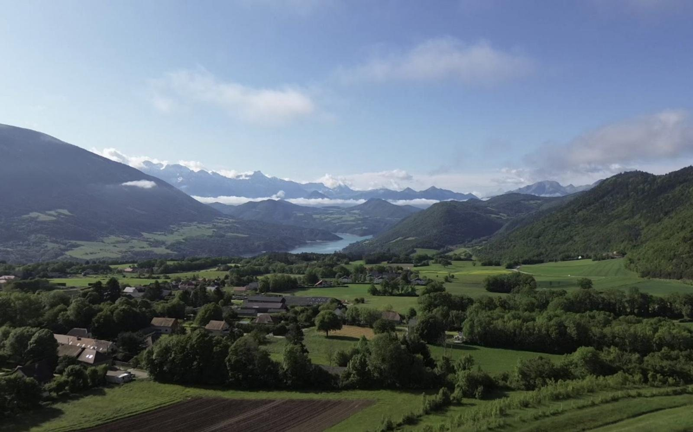

Le château, pièce par pièce.
Plus de 400 ans d’histoire, des caves voûtées, des salons aux plafonds à la française et un parc qui descend jusqu’au lac. Et des fauteuils où l’on a vraiment le droit de s’asseoir.
- 13chambres
- 10 à 100personnes
- 40 minde Grenoble

Quatre siècles, et un lac
Herbelon est né place forte, pendant les guerres de Religion. Le lac est arrivé bien plus tard, et a tout changé.
- XVIe sièclePendant les guerres de Religion, les catholiques tiennent la route du sud à travers le Trièves. Herbelon est l’une de leurs places fortes.
- 1603La famille Sarrazin, seigneurs de Treffort, fait construire le château.
- XVIIe et XVIIIe sièclesIl passe par héritage aux familles d’Armand puis Ravier. André Claude Ravier installe des tuileries à Treffort et représente la noblesse en 1788.
- 1962Le barrage de Monteynard noie la vallée du Drac. Le château se retrouve au-dessus d’un lac turquoise.
- Aujourd’huiSéminaires, mariages et retraites de septembre à juin ; hôtel, restaurant et guinguette l’été.
Les chambres
13 chambres, 35 couchages, et pas deux pareilles : lits à baldaquin sous les toits, mobilier ancien, vue sur le parc ou sur le lac. Chacune a sa salle de bain.
-

Chambre 1
Sous les toits, un coin salon et deux lucarnes.
-

Chambre 2
Sous les toits, deux fauteuils devant la fenêtre et un lit de repos.
-

Chambre 3
Un mur en galets, des bleus de lac, un coin salon et un bureau.
-

Chambre 4
Sous les toits, un ciel de lit vert et or, un bureau ancien.
-

Chambre 5
Des murs rouge profond sous la pente du toit.
-

Chambre 6
Un ciel de lit rose et des coussins en toile de Jouy.
-

Chambre 10
Un lit à baldaquin, des tomettes anciennes et une table pour se retrouver.
Les espaces
| Espace | Taille | On y fait quoi |
|---|---|---|
| Caves voûtées | 220 m² | Conférences, performances, soirées, temps forts collectifs |
| Trois salons | 60 m² chacun | Réunions, travail en groupe, repas près de la cheminée |
| Salle d’activité | 60 m² | Yoga, méditation, ateliers. Parquet ancien, vue sur le lac |
| Terrasse abritée | 40 places assises | Déjeuners et dîners face au lac |
| Parc arboré | 3 000 m² | Pauses, vin d’honneur, accès direct au lac |
| Chambres | 13 | Toutes différentes, chacune avec sa salle de bain |

Les petites choses, déjà prévues
- En libre-serviceCafé, thé et eau fraîche dans le salon de la cheminée.
- Des coins à vivreHamacs, transats, coin lecture, table de jeux.
- Pour votre matérielUn local au bord de l’eau pour planches, vélos et combinaisons.
Venir
1605 route d’Herbelon, 38650 Treffort
- En voiture40 minutes au sud de Grenoble. A51, sortie 13, puis direction lac de Monteynard / Treffort. Parking gratuit sur place.
- En trainGare de Monestier-de-Clermont, puis quelques minutes de taxi. Donnez-nous votre heure d’arrivée.

Envie de voir le lieu ?
On vous fait visiter avec plaisir. Dites-nous quand vous passez.